The Joy of the Teacher is the Success of the Students. – Samuel Chukwuemeka
I greet you this day,
These are the solutions to the Grade 9 released test questions from the Education Quality and Accountability
Office (EQAO).
Please review the formulas, rules/laws, and theorems on the website for each topic as applicable.
If time permits and there is sufficient interest, video solutions may be provided. Please subscribe to the
YouTube channel to be notified
of upcoming livestreams.
You are welcome to ask questions during the video livestreams.
If you find these resources valuable and if any of these resources were helpful in your passing the
Mathematics tests/exams, please consider making a donation:
Cash App: $ExamsSuccess or
cash.app/ExamsSuccess
PayPal: @ExamsSuccess or
PayPal.me/ExamsSuccess
Venmo: @ExamsSuccess or
Venmo.com/u/ExamsSuccess
Square: Exams Success
Buy Me a Coffee: Exams Success
Buy Me a Coffee @ Ko-Fi: Exams Success
Your donation is appreciated.
Comments, ideas, areas of improvement, questions, and constructive
criticisms are welcome.
Feel free to contact me. Please be positive in your message.
I wish you the best.
Thank you.
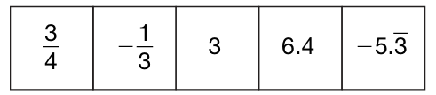
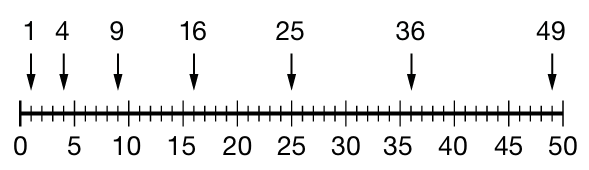
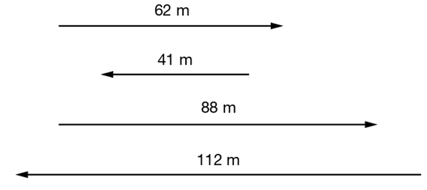
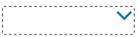
of his initial position.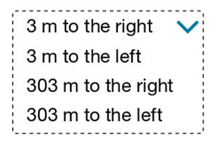
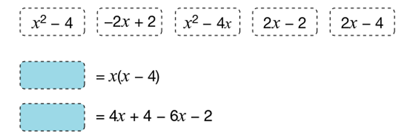
output "Enter the width in centimetres."
store user input as width
output "Enter the length in centimetres."
store user input as length
perimeter = 2 * width + 2 * length
output perimeter, " cm"
Complete the statement. 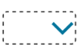
as the length, the output will be 60 cm.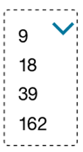
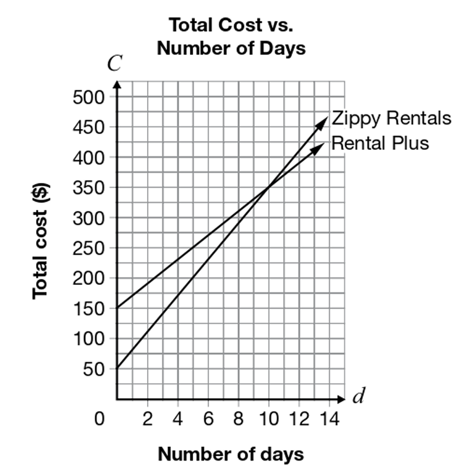
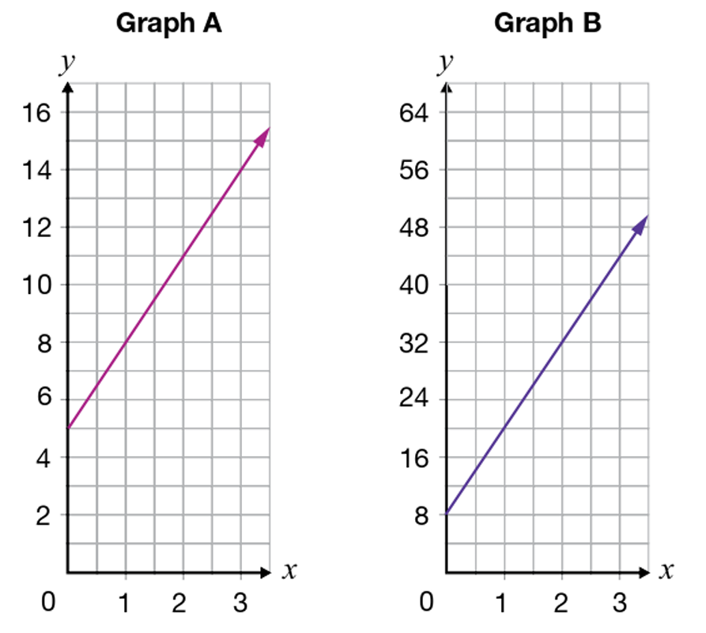
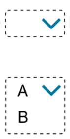
has a rate of change that is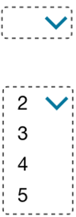
times greater than the rate of change of the other graph.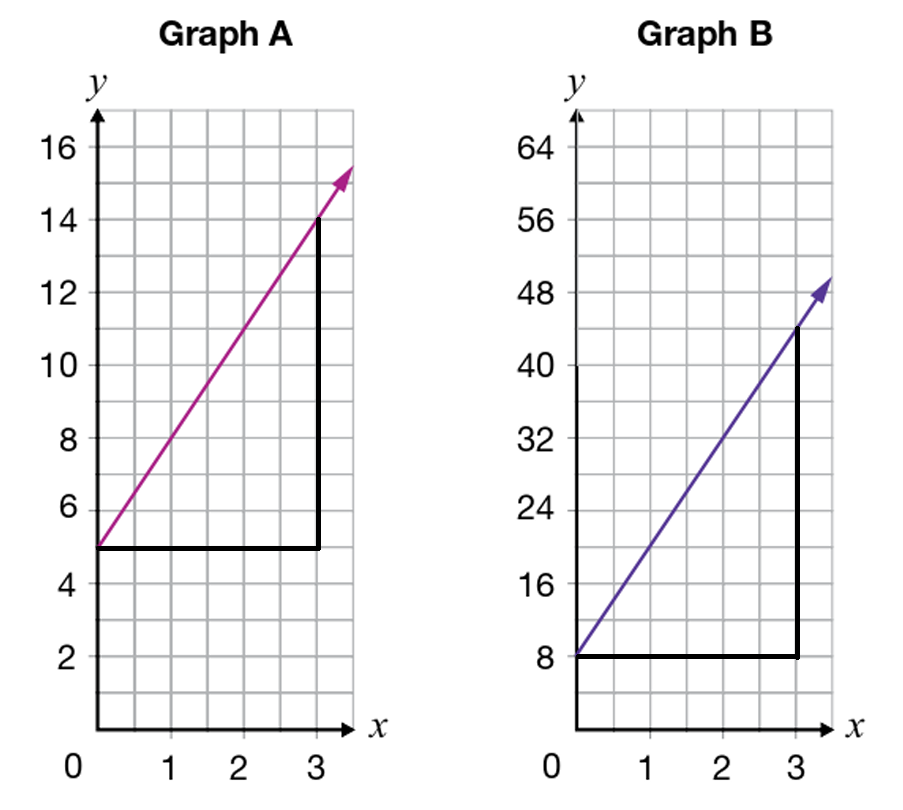
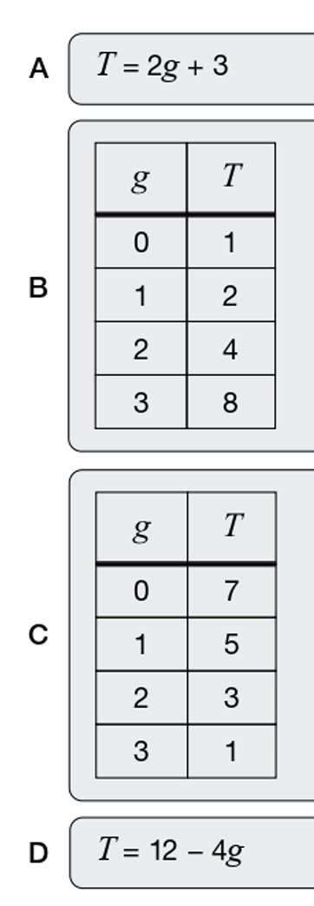
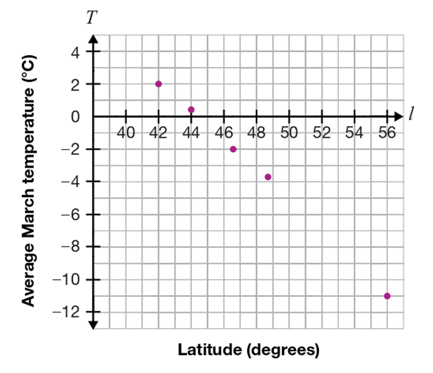
| Ontario community | Latitude (degrees) | Average March temperature (°C) |
|---|---|---|
| Kenora | $50$ | $-6.3$ |
| Red Lake | $51$ | $-7.5$ |
| Timmins | $48$ | $-7$ |
| Brampton | $43$ | $1$ |
| Ontario community | Latitude (degrees) | Average March temperature (°C) |
|---|---|---|
| Brampton | $43$ | $1$ |
| Timmins | $48$ | $-7$ |
| Kenora | $50$ | $-6.3$ |
| Red Lake | $51$ | $-7.5$ |
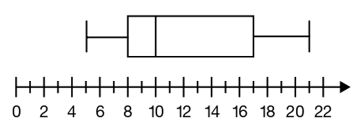
| If the $xth$ position | then, |
|---|---|
| is an integer |
$xth\text{ position} = \dfrac{xth\text{ position} + (x + 1)th\text{ position}}{2}$ In other words, find the value of the $xth$ position; find the value of the next position; and determine the mean of the two values. |
| is not an integer | $xth$ position is rounded up |
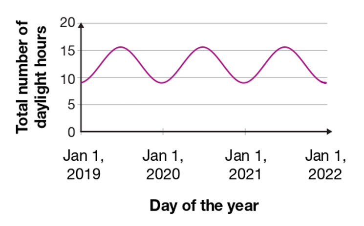
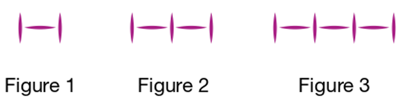
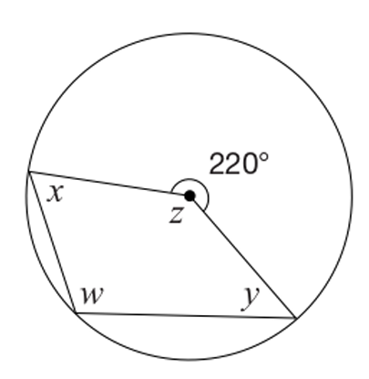
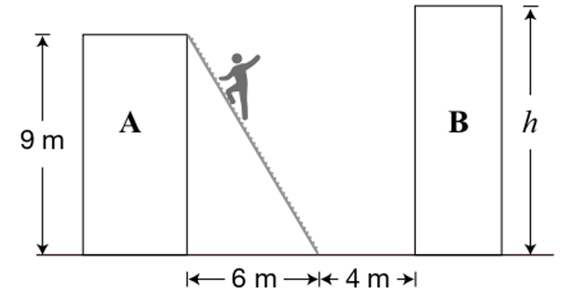
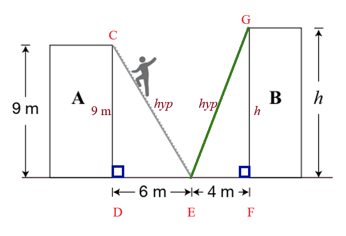